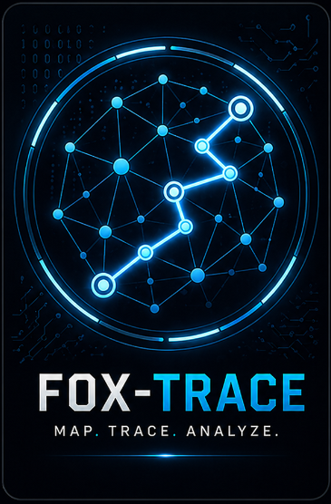

Audits SSH, TLS, HTTP, SMTP, FTP, RDP and email configurations — checks algorithms, certificates, security headers and known weaknesses.

Reads auth.log, firewall logs, auditd and the systemd journal — correlates events by source IP to detect SSH brute force, port scans, and post-login lateral movement.

Maps SSH trust relationships and analyzes potential lateral movement paths to visualize your network's true attack surface.
Reconstructs forensic timelines from Linux binary logs, shell histories, and file activity — DFIR for the command line.
Lab Reports & Writeups
SSH-TLS Auditor: Multi-Protocol Auditing
A comprehensive security tool for auditing SSH, TLS, HTTP, SMTP, FTP, and RDP. Checks for weak algorithms, expired certificates, and insecure banners.
Chain-Watch: Building a Log Correlator
Developing a Python-based security tool to detect multi-stage attacks by correlating SSH logs, firewalls, and auditd events.
RPi 4: Resurrection & DietPi Setup
Recovering a Raspberry Pi 4, troubleshooting kernel-cache issues with SD-cards, and configuring a clean DietPi installation.
Fox-Trace: Mapping SSH Trust Relationships
Building a tool that maps SSH trust graphs — authorized keys, known hosts, and live agents — to calculate blast radius and surface hidden lateral movement paths.
Ghost-Trail: Linux Forensic Timeline Reconstructor
A DFIR tool that reconstructs post-incident timelines from wtmp binary records, shell histories, file activity, and log gaps — with an interactive D3.js timeline export.